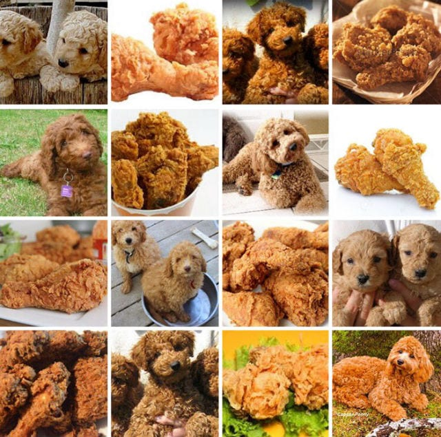
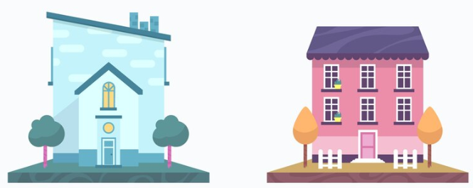
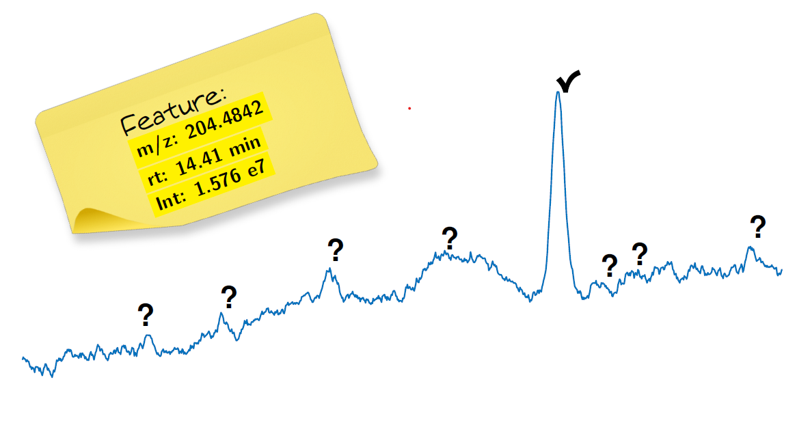
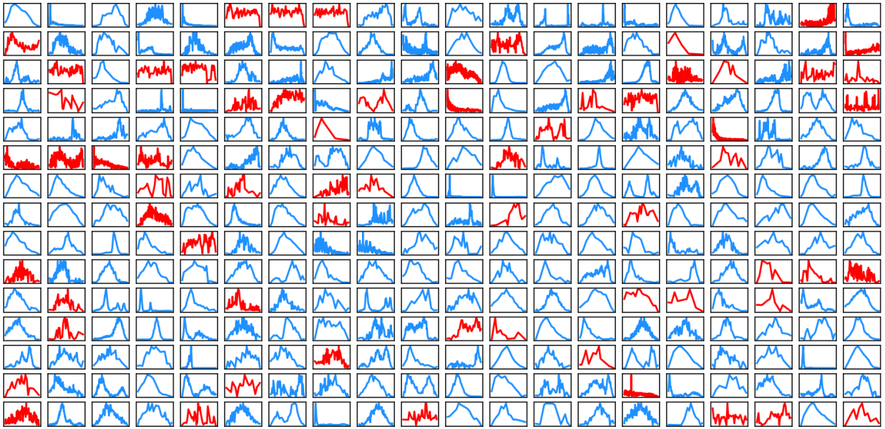
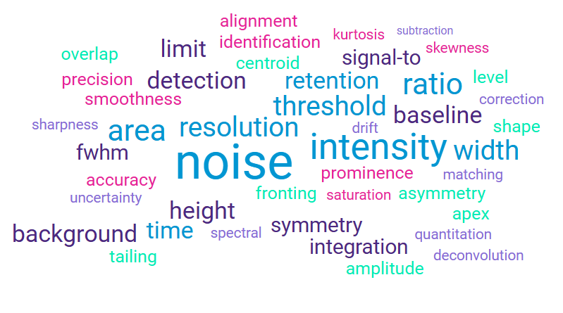
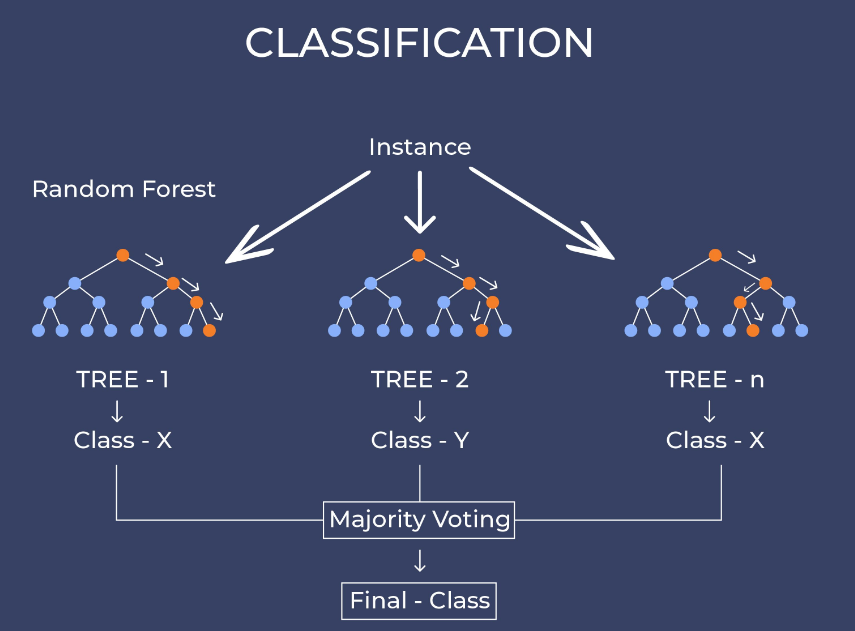
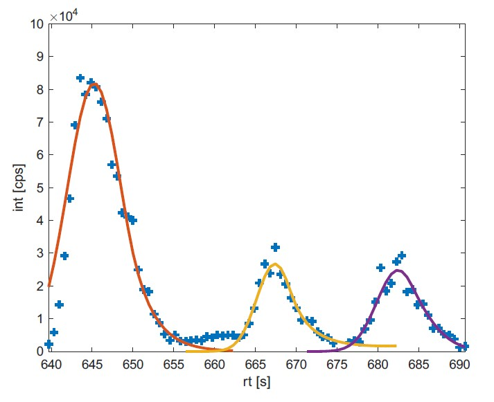

Now it's your turn!
How many dogs can you see?
Be careful, not everything looking like a dog is a dog!
Time remaining: 25 seconds

One more try!
How many dogs can you see?
Time remaining: 12 seconds

Where is the connection to analytical data science?
It's all about pattern recognition!
How do we recognize these as houses?
We have learned to recognize patterns in our environment.
has walls ....checked ✅has roof ....checked ✅has door ....checked ✅has windows ..checked ✅From houses to peaks
Ask some Experts < training >
Find suitable properties < modeling >
Combine < training > & < modeling >
+
Create a model
Apply the model
What < we > provide
Learn how to create machine learning models.
Apply these models to your data to find peaks.
Learn basics of programming and data analysis.
Get to know the tools for data analysis.
Interested?
Contact me for more information.
gerrit.renner@uni-due.de